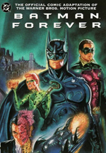

The fictional character Batman, a comic book superhero featured in DC Comics publications, has appeared in various films since his inception. The character first starred in two serial films in the 1940s, Batman and Batman and Robin. The character also appeared in the 1966 film Batman, which was a feature film adaptation of the 1960s Batman TV series starring Adam West and Burt Ward, who also starred in the film. Toward the end of the 1980s, the Warner Bros. studio began producing a series of feature films starring Batman.
Batman Show 1963
Batman is the secret identity of Bruce Wayne, an American billionaire, industrialist, and philanthropist. Having witnessed the murder of his parents as a child, he swore revenge on criminals, an oath tempered with the greater ideal of justice. Wayne trains himself both physically and intellectually and dons a bat-themed costume in order to fight crime.[6] Batman operates in the fictional Gotham City, assisted by various supporting characters including his crime-fighting partner, Robin.
The Batman Movie 1989
Batman is the secret identity of Bruce Wayne, an American billionaire, industrialist, and philanthropist. Having witnessed the murder of his parents as a child, he swore revenge on criminals, an oath tempered with the greater ideal of justice. Wayne trains himself both physically and intellectually and dons a bat-themed costume in order to fight crime.[6] Batman operates in the fictional Gotham City, assisted by various supporting characters including his crime-fighting partner, Robin.
Batman Dark Knight
Batman is the secret identity of Bruce Wayne, an American billionaire, industrialist, and philanthropist. Having witnessed the murder of his parents as a child, he swore revenge on criminals, an oath tempered with the greater ideal of justice. Wayne trains himself both physically and intellectually and dons a bat-themed costume in order to fight crime.[6] Batman operates in the fictional Gotham City, assisted by various supporting characters including his crime-fighting partner, Robin.
Batman Returns Comic

Batman is the secret identity of Bruce Wayne, an American billionaire, industrialist, and philanthropist. Having witnessed the murder of his parents as a child, he swore revenge on criminals, an oath tempered with the greater ideal of justice. Wayne trains himself both physically and intellectually and dons a bat-themed costume in order to fight crime.[6] Batman operates in the fictional Gotham City, assisted by various supporting characters including his crime-fighting partner, Robin, his butler Alfred Pennyworth, the police commissioner Jim Gordon, and occasionally the heroine Batgirl. He fights an assortment of villains, often referred to as the "rogues gallery", which includes the Joker, the Penguin, the Riddler, Two-Face, Ra's al Ghul, Scarecrow, Poison Ivy, and Catwoman, among many others.